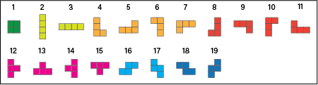
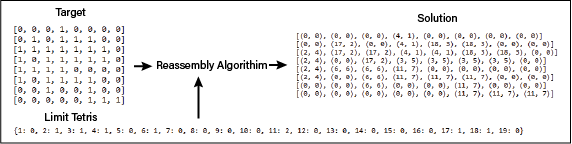
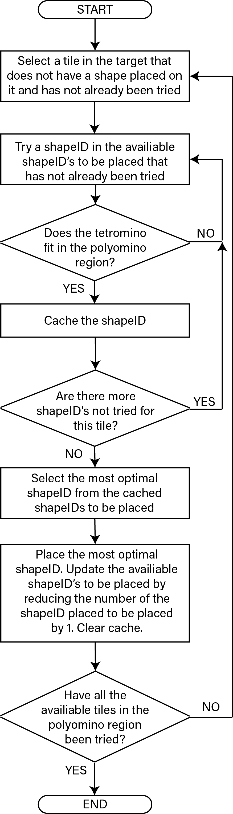
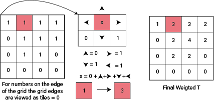
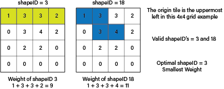
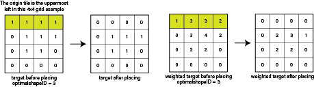
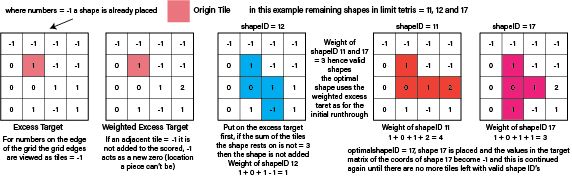
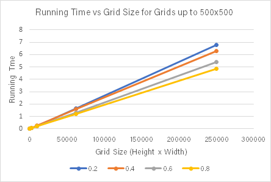

The tetriling reassembly is effectively a Tetris style jigsaw puzzle. You are given a randomly generated shape (known as the polyomino region), then using a given set of tetrominoes (tetris pieces) the aim is to cover the shape entirely. The goal of this project was to design an algorithm that could complete the reassembly as accurately and quickly as possible and implement it in python.
Each of the 19 tetrominoes are given a unique shapeID. The tetrominoes are rotations or reflections of 7 base shapes but documented as such to eliminate the need to rotations to be applied in the code.
The number of each shape used is output into a dictionary called limit_tetris, where the key is the shapeID and the value is the number of that shapeID used in the polyomino region. The target region is specified as binary 1's and 0's, where a 1 represents a tile to be covered, and a 0 a tile to be kept free.
After consideration, it was decided that the most time efficient algorithm would be greedy, the choice of piece to be placed would be made in isolation to the previous, and the next. If speed was not specified as so much of a factor, an element of backtracking could be added to ensure 100% accuracy was achieved. Below is a flow chart showing the final design of the algorithm.
The two main factors when considering pieces to be placed were as follows: Does it fit? And is it the best piece to be placed at this instance? To see if it fitted the algorithm looked at the matrix coordinates it would be placed at and if the sum of the covered tiles was equal to 4 it was valid. The next step was making the decision about which shape was optimal out of those that were valid. The strategy was to use edge-finding and the adjacency method so that the piece placed stuck as closely to edge of the polyomino region so as to not intrude on the middle of the region or to leave say a random area of 3 tiles in the middle of the region.
To do this the area was weighted as above.
And the cached pieces evaluated so that the one selected rested upon the tiles with the fewest edges or adjacent tiles to be covered.
Once a shape was placed, the region was updated to represent its new state, the limit_tetris was updated also, subtracting the piece from the dictionary of pieces to be used. Once the algorithim had run through the grid, and had no more valid shapes to place, the region would either be 100% complete, or have some missing tiles. For the sake of accuracy, a quick method was used that ensured that as much of the region was covered as possible. If there was a shape remaining, and could cover 3 uncovered tiles, it was placed using the method below.
As desired, the algorithm proved to be quick and fairly accurate with accuracy ranging from 100%-80% depending on grid size and density, the algorithm was most consistently accurate for large grid sizes, averaging around 95% for all grids greater than 100x100, the performance of the final algorithm can be seen below, note the algorithm also had linear running time, which is ideal for increasingly large grid sizes.
Back to portfolio